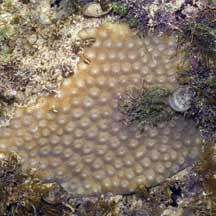
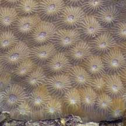
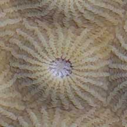
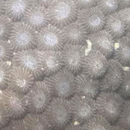
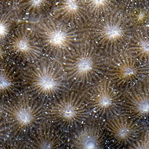
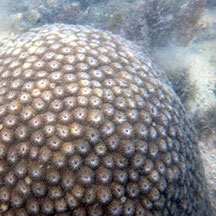
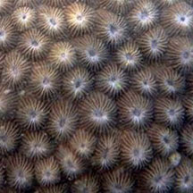
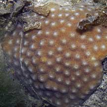
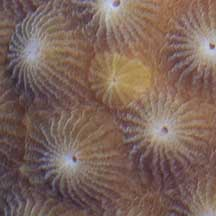

|
|
| hard corals text index | photo index |
| Phylum Cnidaria > Class Anthozoa > Subclass Zoantharia/Hexacorallia > Order Scleractinia > Family Faviidae |
| Moon
coral Diploastrea heliopora* Family Diploastreidae updated Nov 2019 Where seen? This beautiful neat coral is sometimes seen, usually on our undisturbed Southern shores. Diploastrea heliopora is the only member of this genus and the only genus in the Family Diploastreidae. Favia laxa may appear similar. Features: Colonies 15-30cm, elsewhere recorded to grow up to 5m wide and 2m tall. The colonies are said to be usually dome-shaped but may become almost spherical boulders. Some seen were encrusting. The corallites (1cm) are similarly-sized neat domes with a small central opening. Neat narrow ridges on the corallite radiate out in regular rays. The corallites are regularly spaced out for an overall pattern that is neat and tidy. The large polyp tentacles are said to emerge at night. Colours seen include brown, purplish, pinkish-brown sometimes with a bluish tinge. Status and threats: This coral is listed as globally Near Threatened by the IUCN. Like other creatures of the intertidal zone, they are affected by human activities such as reclamation and pollution. Trampling by careless visitors, and over-collection also have an impact on local populations. |
 Pulau Jong, Jul 07 |
 |
 |
*Species are difficult to positively identify without close examination.
On this website, they are grouped by external features for convenience of display.
| Moon corals on Singapore shores |
On wildsingapore
flickr
|
| Other sightings on Singapore shores |
 |
 |
 Pulau Semakau (North), Jul 20  Photo shared by Loh Kok Sheng on facebook. |
 Terumbu Salu, Jan 10  |
|
Links
References
|